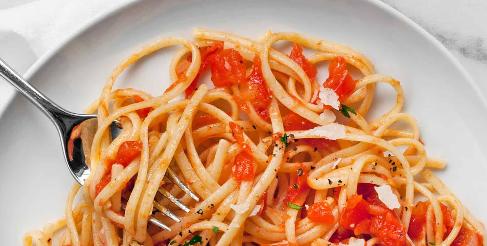
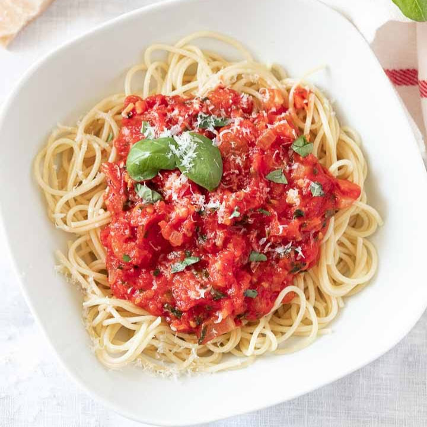
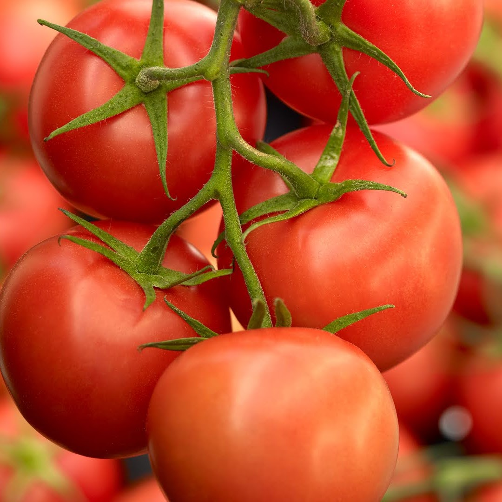
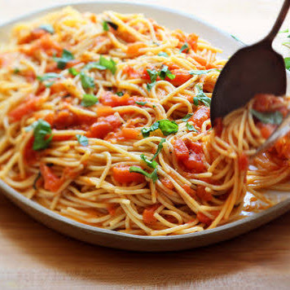

Tomato Pasta Sauce
Is your spaghetti boring and dull? Try this super easy pasta sauce recipe to brighten up your dish! It's fast, tasty and only needs a few ingredients. So go on and try it out! Add it to your cooked pasta for a punch of flavor that you won't regret.

Ingredients
- 6 fresh tomatos
- 1/2 cup olive oil
- 3 garlic cloves, finely minced
- 1 Tbsp lemon juice
- 1/2 cup fresh basil
- Parsley
- Salt and pepper to taste

Directions
- Mix tomatoes, lemon juice, basil, pepper, and parsley in a bowl
- Heat olive oil in a saucepan
- Add the garlic and cook, stirring for 2 minutes
- Add onions and continue to cook and stir for 1 minute
- Grill until lightly browned and flip over
- Add the tomato mixture and salt and simmer for 10 minutes

"So easy! It took me 15 minutes and tasted so good!"
"Goes well with any pasta and was a great meal to keep me up during my all-nighter for my statistics final!"
"I can't believe how good this was."